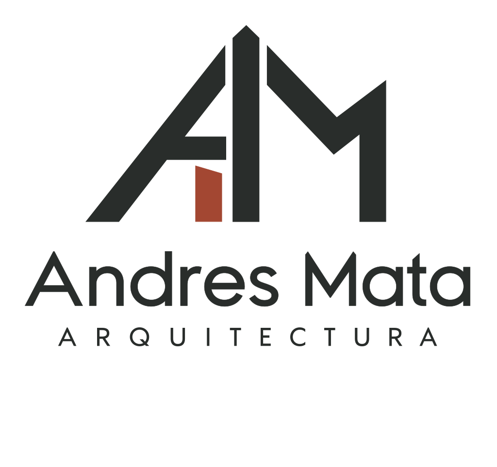
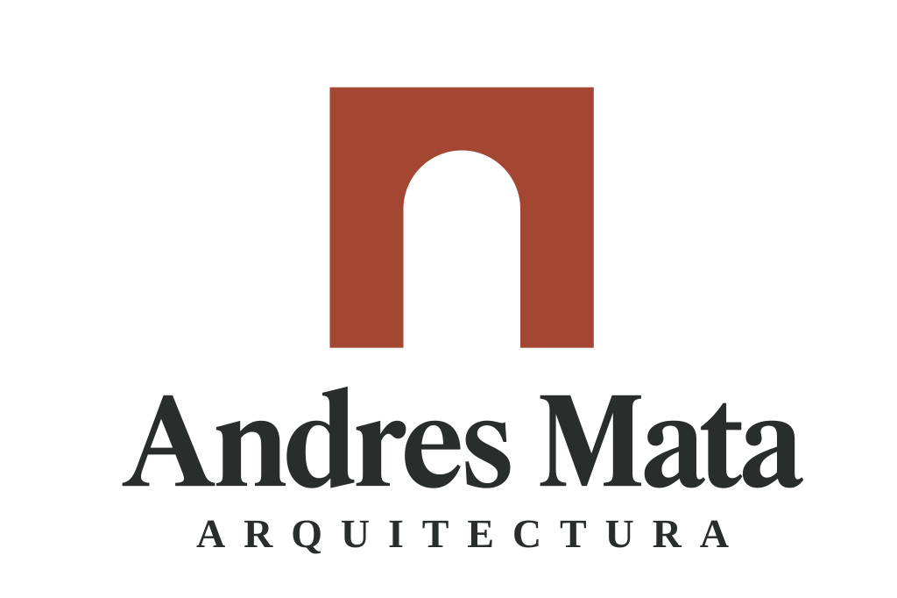
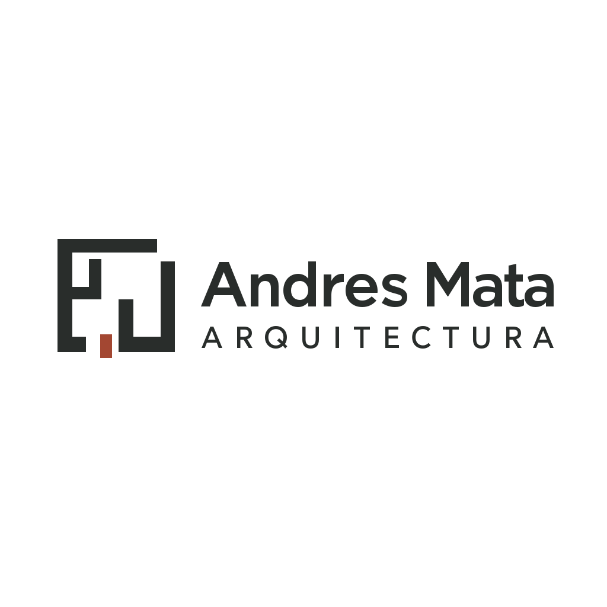
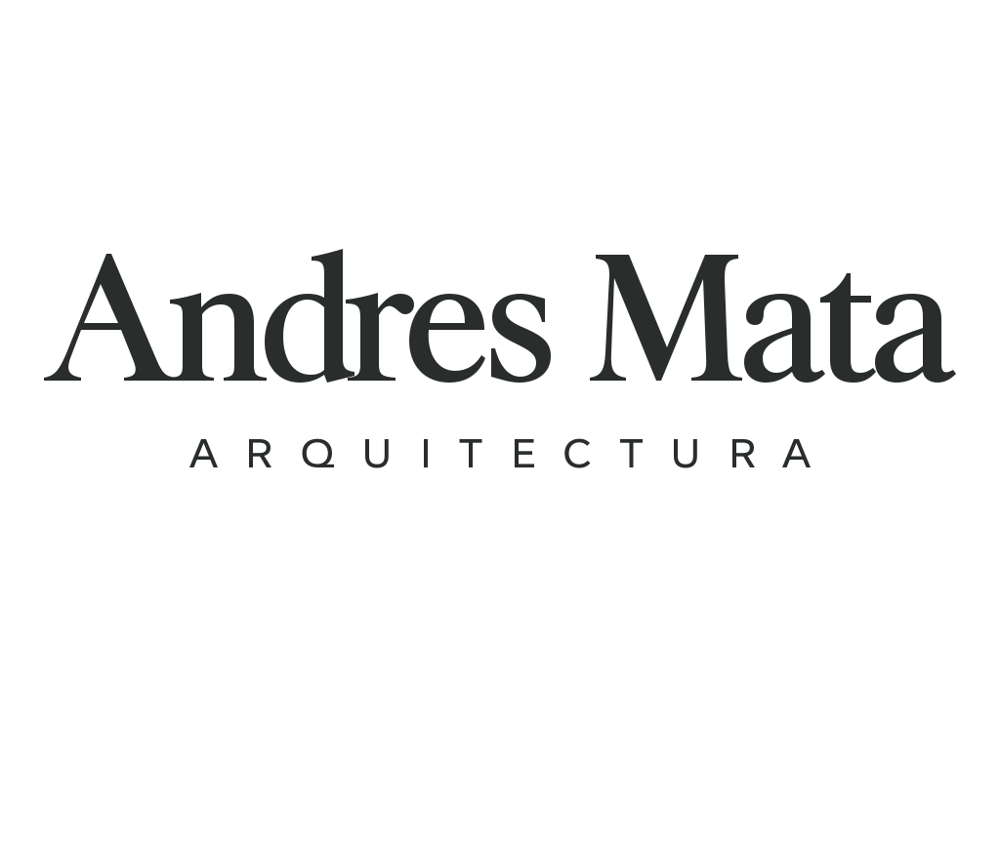
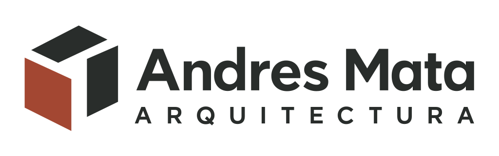
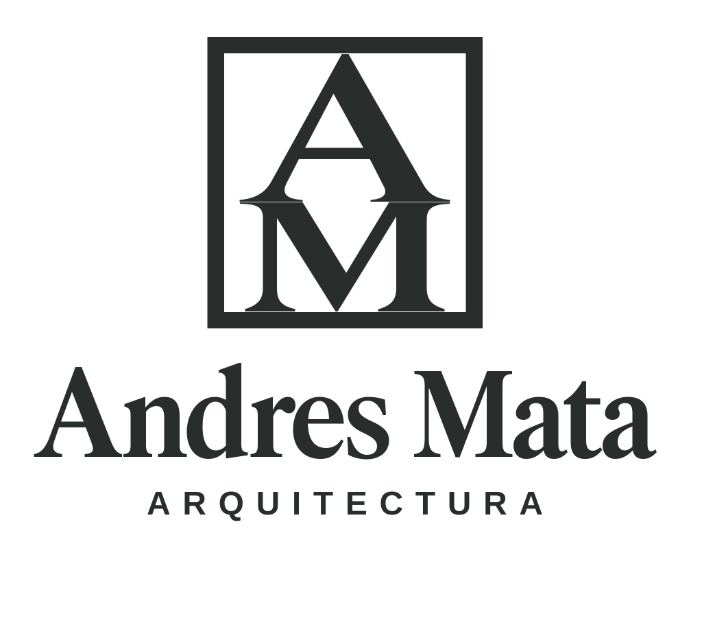

Seis caminos distintos para elegir una dirección. Generados con Quiver Arrow 2 Telos. Cada propuesta incluye su vector y una versión PNG con fondo transparente.

Iniciales AM entrelazadas

Un acceso tallado en la masa

La lógica de una planta

El nombre como identidad

Muros, luz y espacio

La firma del estudio